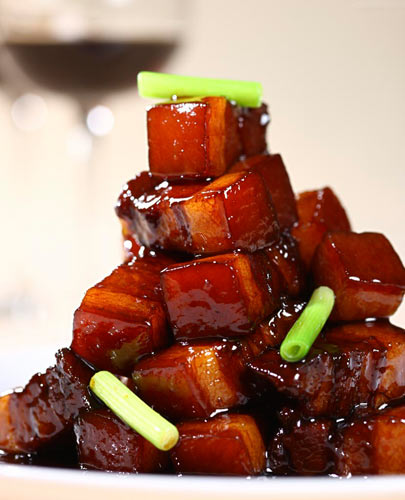
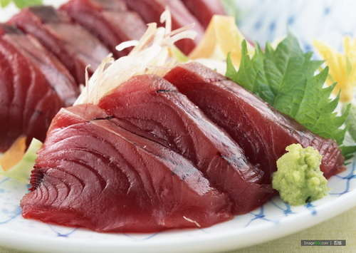
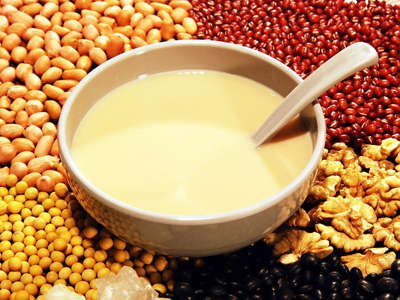
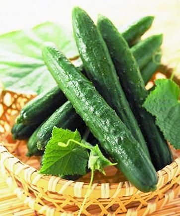
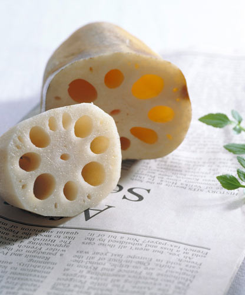
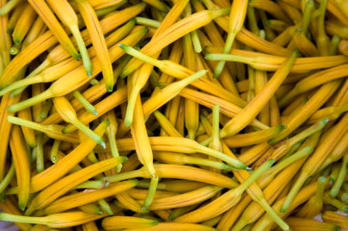

猪肉是人们日常接触最多的食品之一，因为太常吃，人们还发明了许多新鲜花样去烹饪这道传统美食，发明创新固然好，可不懂营养知识乱来则会给健康带来麻烦。下面让我们看看哪些食物不宜与猪肉搭配，哪些食物最适合与猪肉搭配食用吧，给孩子和家人做菜的时候要记得这些搭配啊！
牛肉
猪肉和牛肉不共食的说法由来已久，《饮膳正要》指出：“猪肉不可与牛肉同食”。
这主要是从中医角度来考虑，一是从中医食物药性来看，猪肉酸冷、微寒，有滋腻阴寒之性，而牛肉则气味甘温，能补脾胃、壮腰脚，有安中益气之功。多吃牛肉少吃猪肉十大理由二者一温一寒，一补中脾胃，一冷腻虚人。性味有所抵触，故不宜同食。

羊肝
中医云：“猪肉共羊肝和食之，令人心闷。这主要是因为羊肝气味苦寒，补肝、明目，治肝风虚热。猪肉滋腻，入胃便作湿热，从食物药性讲，配伍不宜。羊肝有膻气，与猪肉共同烹炒，则易生怪味，从烹饪角度讲看，亦不相宜。
大豆
从现代营养学观点来看，豆类与猪肉不宜搭配，是因为豆中植酸含量很高，60%——80%的磷是以植酸形式存在的。它常与蛋白质和矿物质元素形成复合物，而影响二者的可利用性，降低利用效率；还有就是因为豆类与瘦肉、鱼类等荤食中的矿物质如钙、铁、锌等结合，从而干扰和降低人体对这些元素的吸收。故猪肉与黄豆不宜搭配，猪蹄炖黄豆是不合适的搭配。

香菜
芫荽又名香菜，可去腥味，与羊肉同吃相宜。芫荽辛温，耗气伤神。猪肉滋腻，助湿热而生痰。古书有记载：“凡肉有补，唯猪肉无补”。一耗气，一无补，故二者配食，对身体有损害。
什么食物和猪肉是最佳搭配
猪肉+黄瓜
黄瓜性味甘凉，具有清热、利尿、解毒的功效。
在日常膳食中黄瓜烧肉是由黄瓜与滋阴润燥、补中益气的猪肉相配而成的，具有清热解毒、滋阴润燥的功效。
适合于烦热、阴虚干咳、体虚、乏力、营养不足、便秘者。

猪肉+莲藕
藕性味甘寒，具有健脾、开胃、益血、生肌、止泻的功效，配以滋阴润燥、补中益气的猪肉，素荤搭配合用，可为人体提供丰富的营养成分，具有滋阴血、健脾胃的功效。
适合于体倦、乏力、瘦弱、干咳、口渴者。健康人食用则可补中养神、益气益力。

猪肉+黄花菜
黄花菜又名金针菜。黄花菜色泽金黄，香味浓郁，食之清香、爽滑，黄花菜的营养价值也很高，含有丰富的蛋白质、多种维生素等营养物质，能安五脏、补心志、明目，与滋补肾气的猪肉配成菜肴，具有滋补气血、填髓添精的作用。可防治神经衰弱、反应迟钝、记忆力减退等，还可辅助治疗食欲欠佳、体虚乏力等。
猪肉是人们日常接触最多的食品之一，因为太常吃，人们还发明了许多新鲜花样去烹饪这道传统美食，发明创新固然好，可不懂营养知识乱来则会给健康带来麻烦。下面让我们看看哪些食物不宜与猪肉搭配，哪些食物最适合与猪肉搭配食用吧，给孩子和家人做菜的时候要记得这些搭配啊
